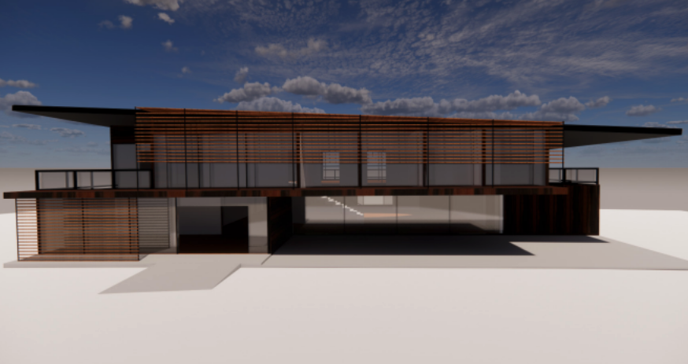

First Year
"Design can be a powerful tool for good."
MARIAM KAMARA
Astrophile is a word that describes a person who loves stars. Astrophile Pavilion features two main platforms, both of which are accessible through stairs and can be sat on or layed down upon, for soul purpose of being able to watch the stars at night. This pavilion is conceptually located right in the middle of the city and nature, being able to enjoy the simplicity of nature while gazing at the stars. Not only is the pavilion great at night but also in the day time. Located under the platform there are indentions in the ground allowing people to go under and get some shade. Another key component within the design are the walls that form an edge towards nature. These walls create a node made out of lite stone with holes that are cut through the center to allow for circulation through each set forming an abstract tunnel of vision straight to the forest.
ECOLOGY CENTER FOR WILDERNESS
